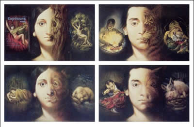

|  Chapter Fifteen, Text 8-9 'The living entity in the material world carries his different conceptions of life from one body to another as the air carries aromas. Thus he takes one kind of body and again quits it to take another. 'The living entity, thus taking another gross body, obtains a certain type of ear, eye, tongue, nose and sense of touch, which are grouped about the mind. He thus enjoys a particular set of sense objects.' |
||
| © 2002-2004 ISKCON | ||